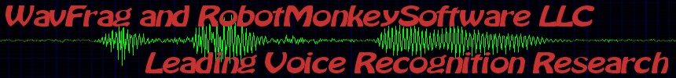

[ Home ] [ Recognition ] [ Training ] [ Commands ] [ Technology ] [ Contact ] WavFrag Voice Recognition, Contact The
WavFrag algorithm is available for licensing. In its current state, it
is stable, and it is robust enough for
mainstream deployment. WaveFrag is available in DLL form for
licensing. The source code is also available for licensing or
know-how transfer.
We are
taking orders for custom development and
porting to various platforms. As the algorithm uses much less
processing
power than its
predecessors / competitors, it opens up true voice / command
recognition for embedded platforms,
smart phones and even places where voice recognition was unimaginable.
WaveFrag represents a new achievement in state of the art, deploy it
with confidence.
The recognition excels in achieving speaker independence, microphone independence and noise tolerance. In its current form it is suited for tasks like commanding a medical workstation by virtue of voice commands. WaveFrag can be used for a variety of tasks, as a basis for voice interaction. As the recognition can be configured to a more 'strict' level, where it becomes suitable for industrial or military deployment. WaveFrag is currently running on the windows platform, in the form of a DLL and a demo application. It is written in C++, and it can be ported to many of the industry standard platforms.  |
||
| Copyright by (C)
2009, Peter Glen, (C) 2010 RobotMonkeySoftware LLC. |